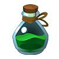
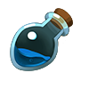
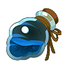
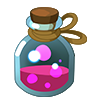
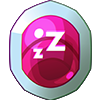

Medicine items are used in and out of battle to restore health or stamina, revive, or cure a status effect of a Nexomon. There are 22 medicine items.
- Potion
- Restores 40 HP.
- Super Potion 
- Restores 80 HP.
- Ultra Potion

- Restores 120 HP.
- Max Potion
- Restores 200 HP.
- Ether 
- Restores 60 stamina.
- Super Ether 
- Restores 100 stamina.
- Ultra Ether

- Restores 150 stamina.
- Max Ether
- Restores 200 stamina.
- Elixir

- Restores both 50 HP and 50 stamina.
- Super Elixir 
- Restores both 90 HP and 90 stamina.
- Ultra Elixir
- Restores both 140 HP and 140 stamina.
- Max Elixir

- Restores both 200 HP and 200 stamina.
- Revive

- Restores a fainted Nexomon along with 50 HP.
- Super Revive
- Restores a fainted Nexomon along with 80 HP.
- Ultra Revive

- Restores a fainted Nexomon along with 120 HP.
- Anti Burn
- Cures the "BURNING" status effect on a Nexomon!
- Anti Paralyze

- Cures the "PARALYZED" status effect on a Nexomon!
- Anti Poison

- Cures the "POISONED" status effect on a Nexomon!
- Anti Freeze

- Cures the "FROZEN" status effect on a Nexomon!
- Anti Sleep 
- Cures the "ASLEEP" status effect on a Nexomon!
- Anti Confusion
- Cures the "CONFUSED" status effect on a Nexomon!
- Anti Bind

- Cures the "BOUND" status effect on a Nexomon!